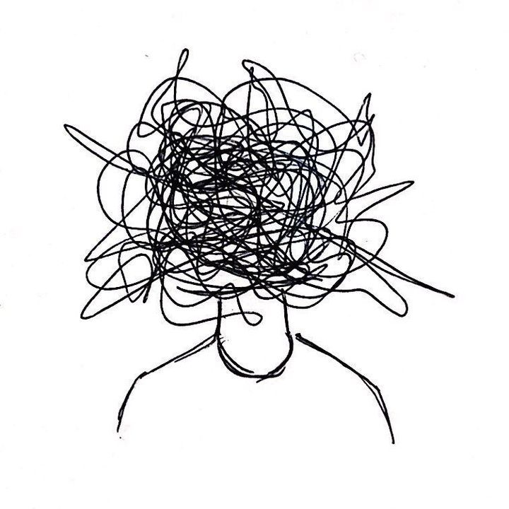

01
Sign & Symptom
Depression
- Feelings of sadness, tearfulness, emptiness or hopelessness
- Angry outbursts, irritability or frustration, even over small matters
- Sleep disturbances, including insomnia or sleeping too much
- Slowed thinking, speaking or body movements
- Unexplained physical problems, such as back pain or headaches

02
Sign & Symptom
Anxiety Disorders
- Trouble concentrating or making decisions
- Having a sense of impending danger, panic or doom.
- Sweating, trembling or shaking
- Experiencing nausea or abdominal distress
- Having heart palpitations
03
Sign & Symptom
Post-Traumatic Stress Disorder (PTSD)
- Flashbacks
- Nightmares
- Avoidance
- Repetitive and distressing images or sensations
- Physical sensations, such as pain, sweating, feeling sick or trembling
Sign & Symptom
Bipolar Affective Disorder
- Extreme mood changes (mania and depression)
- Unusually high energy, reduced need for sleep
- Impulsive or risky behavior
- Difficulty concentrating
- Changes in appetite or activity levels
Sign & Symptom
Dissociative Disorder
- Feeling detached from yourself (depersonalization)
- Memory gaps or “lost time”
- Feeling unreal or disconnected from surroundings
- Identity confusion
- Emotional numbness
Sign & Symptom
Eating Disorder
- Preoccupation with food, weight, or body shape
- Restricting food, binge eating, or purging behaviors
- Rapid weight changes
- Dizziness, fatigue, or weakness
- Feeling guilt or shame around eating
Sign & Symptom
Obsessive Compulsive Disorder (OCD)
- Intrusive thoughts (obsessions) that cause anxiety
- Repetitive behaviors (compulsions) to reduce distress
- Excessive checking, cleaning, or counting
- Strong need for symmetry or order
- Time-consuming routines that disrupt daily life
Sign & Symptom
Psychosis Disorder
- Hallucinations (hearing/seeing things others don’t)
- Delusions (strong beliefs not based in reality)
- Disorganized thinking or speech
- Social withdrawal
- Difficulty functioning at work/school
Sign & Symptom
Schizophrenia Disorder
- Hallucinations or delusions
- Disorganized speech and behavior
- Reduced emotional expression
- Difficulty concentrating
- Social withdrawal and reduced motivation